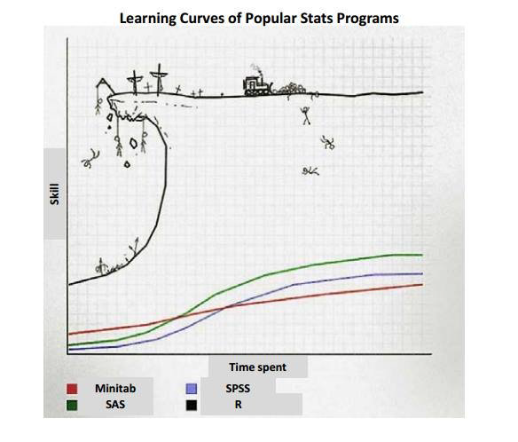
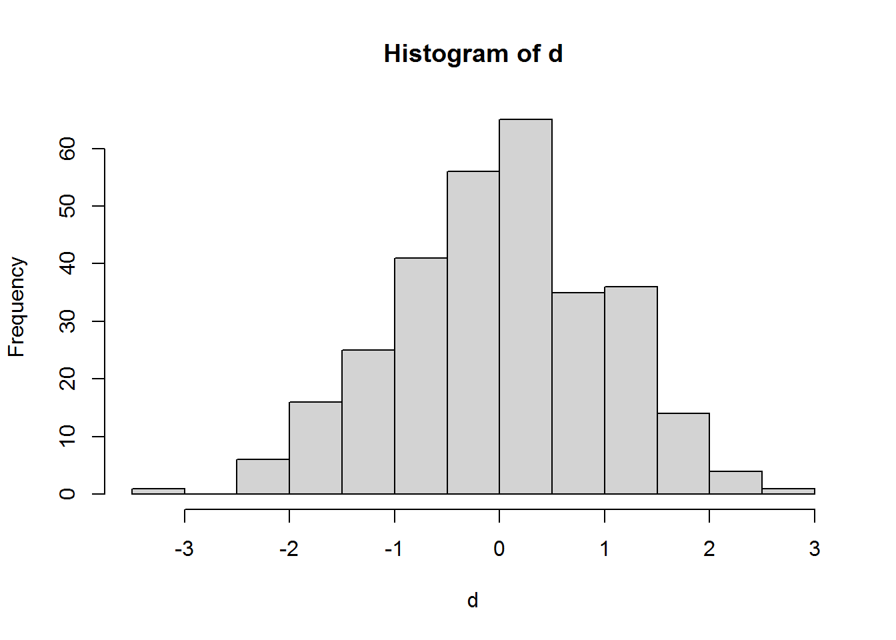

1 Základy R - 1
1.1 Čo je R?

- programovací jazyk - object oriented (https://en.wikipedia.org/wiki/Object-oriented_programming)
- pre manipuláciu dát, vizualizáciu, štatistické operácie - data science, data analysis
- open source, freeware
- základy a niektoré advanced veci viete nájsť v prehľadnej podobe napríklad tu:
https://intro2r.com/
1.1.1 CEU analógia
Viacerí z Vás asi videli film Fight Club. Práca s jazykom R a s RStudiom môže byť podobná:
- niektoré veci dávajú zmysel až na konci
- niektoré veci sa stanú veľmi elegantnými, ak človek pozná koniec
- neuškodí si film znova pozrieť
1.1.2 V kontexte R
- veľa vecí sa deje na pozadí (prvé pravidlo FC)
- práca s ním Vám môže prinášať istú satisfakciu, ale na ceste k jeho poznaniu musíte zniesť zopár úderov
1.1.3 Výhody a nevýhody
- keď sa ho človek naučí, tak už nebude chcieť používať nič iné
- open source
- výhoda: veľa knižníc, pravidelná aktualizácia
- nevýhoda: ak človek nemá záujem aktualizovať knižnicu, tak treba nájsť alternatívne riešenia
- replikovateľné výstupy
- náročný na začiatku
- má určité obmedzenia pri sofistikovanejších operáciách
1.1.4 Základné pravidlá skriptingu
- Google!
- nikdy nekódujte v konzole - môžete stratiť časť alebo celý kód
- pre svoj kód využívajte tzv. skript (neskôr aj iné ako napríklad RMarkdown)
- kód spustíte ctrl+enter na Windowse a cmd+enter na macu
- skript si pravidelne ukladajte, použite .R príponu
- undo sa dá pomocou ctrl z, redo ctrl+shift+z na Windowse
- undo na macu sa dá pomocou cmd+z a redo cmd+shift+z
- kód si pre prehľadnosť komentujte
- ak nepoužívate anglickú klávesnicu, tak špeciálne znaky vložíte takto:
- < - alt + 60
- > - alt + 62
- [ - alt + 91
- ] - alt + 93
- ^ - alt + 94
- { - alt + 123
- } - alt + 125
- | - alt 124
- ~ - alt 126
- asi skoro (pri R nikdy nie je skoro), ale tu nájdete zopár best practices písania kódu:
1.2 Konečne sa dostávame ku kódovaniu
# komentovať môžete napísaním "#" pred textOkrem komentovania takto napísaný text nespraví nič.
Jednoduché príkazy
2+2## [1] 42+4*2## [1] 10(2+4)*2## [1] 12print("Hello World")## [1] "Hello World"1.3 Working directory
- R má na pozadí uložené working directory. Ide o priečinok, odkiaľ defaultne načítava dáta alebo kam ich exportuje.
- Dobrou praxou pre ľahšiu prácu je na začiatku skriptu WD definovať
Aktuálne WD zistíte takto:
getwd()## [1] "C:/Users/mario.kajan/Desktop/Desktop/AC ORA/Vzdelávanie medzi AJ/Kurz/Kniha"WD viete zmeniť nasledovne
setwd("C:/Users/mario.kajan/Desktop")
getwd()## [1] "C:/Users/mario.kajan/Desktop"- Pri odkazovaní na WD je možné použiť skratku
- Na Windowse to ide prostredníctvom “.” a funguje to napríklad takto:
setwd("./test")
getwd()## [1] "C:/Users/mario.kajan/Desktop/Desktop/AC ORA/Vzdelávanie medzi AJ/Kurz/Kniha/test"- pri macu je potrebné použiť “~”, napríklad takto setwd(~/test)
- Takéto odkazovanie je praktické pri načítavaní a exporte dát a pri vytváraní loopov na to určených
1.4 Objekty v R
V R sa dá fungovať aj s vyjadrením všetkých operácií v kóde, ale oveľa praktickejšie je tieto ukladať do objektov - na to slúžia nasledovné znaky <- a -> (niekto používa aj =, ale to môže viesť k neprehľadnosti)
y <- -10
y## [1] -10print(y) #elegantnejšie (prehľadnejšie?)## [1] -10x <- T
x## [1] TRUER Vás nezastaví, ak budete robiť nezmyselné operácie (aj keď napríklad textové reťazce nebude spočítavať).
z <- x + y
z## [1] -9Matematické znamienka + - * / ^
6^2## [1] 36taktiež < <= > >= == (rovná sa) != (nerovná sa), & (prienik/a), | (zjednotenie/alebo)
Vyhýbajte sa prepisovaniu objektov, lebo ich už nebudete vedieť vrátiť do pôvodného stavu
- existujú situácie, kedy je to možné, ale potom je zložitejšie sa dostať do stavu, keď mal objekt hodnoty ako pred prepísaním
1.5 Vektory
Vektory sa definujú prostredníctvom písmena “c”
- vyhnite sa preto definovaniu objektu do písmena c
numericVector <- c(1, 2, 3, 4, 5)
print(numericVector)## [1] 1 2 3 4 5numericVector <- c(1:5) #alebo
print(numericVector)## [1] 1 2 3 4 5charvector <- c('Bob', 'Jane', 'Jack')
print(charvector)## [1] "Bob" "Jane" "Jack"logicalvector <- c(T, F, T) ## T = TRUE, F = FALSE)
print(logicalvector)## [1] TRUE FALSE TRUEls príkaz - zobrazí všetky objekty
ls()## [1] "htmlhead" "charvector" "img" "logicalvector"
## [5] "numericVector" "x" "y" "z"rm príkaz - odstráni objekty
rm()S vektormi sa samozrejme dajú robiť matematické operácie
(numericVector <- c(1, 2, 3, 4, 5) + 1) #všimli ste si? netreba print príkaz## [1] 2 3 4 5 61.6 Matice
Poradie v rámci matíc (aj data frames) je definované ako najprv riadky, potom stĺpce - VŽDY!
trialMat <- matrix(1:20, nrow = 2, ncol = 10, byrow = F)
trialMat## [,1] [,2] [,3] [,4] [,5] [,6] [,7] [,8] [,9] [,10]
## [1,] 1 3 5 7 9 11 13 15 17 19
## [2,] 2 4 6 8 10 12 14 16 18 20trialMat <- matrix(1:20, nrow = 2, ncol = 10, byrow = T)
trialMat## [,1] [,2] [,3] [,4] [,5] [,6] [,7] [,8] [,9] [,10]
## [1,] 1 2 3 4 5 6 7 8 9 10
## [2,] 11 12 13 14 15 16 17 18 19 20trialMat[1, ] # vyberie riadok so všetkými stĺpcami, keď je druhá súradnica prázdna## [1] 1 2 3 4 5 6 7 8 9 10trialMat[ , 5] # vyberie stĺpec so všetkými riadkami, keď je prvá súradnica prázdna## [1] 5 15trialMat[2, 2] # vyberie presný údaj z objektu## [1] 12Matice sa samozrejme dajú aj transponovať:
trialMat <- matrix(1:20, nrow = 2, ncol = 10, byrow = T)
tranMat <- t(trialMat)
print(tranMat)## [,1] [,2]
## [1,] 1 11
## [2,] 2 12
## [3,] 3 13
## [4,] 4 14
## [5,] 5 15
## [6,] 6 16
## [7,] 7 17
## [8,] 8 18
## [9,] 9 19
## [10,] 10 20propMat <- t(tranMat)
print(propMat)## [,1] [,2] [,3] [,4] [,5] [,6] [,7] [,8] [,9] [,10]
## [1,] 1 2 3 4 5 6 7 8 9 10
## [2,] 11 12 13 14 15 16 17 18 19 20Maticu viete tiež viete previesť na vektor:
trialMat <- matrix(1:20, nrow = 2, ncol = 10, byrow = T)
as.vector (trialMat)## [1] 1 11 2 12 3 13 4 14 5 15 6 16 7 17 8 18 9 19 10 20as.vector (t(trialMat)) # transponovaná## [1] 1 2 3 4 5 6 7 8 9 10 11 12 13 14 15 16 17 18 19 20Strácate sa?
Nápovedu viete vyvolať otáznikom pred názvom funkcie:
?sdPotrebujete pomôcť so syntaxom? Skontrolujte argumenty použitím príkazu args():
args(sd)## function (x, na.rm = FALSE)
## NULLPokračujme s prácou s dátami
a <- c(1:25) # vytvorme dáta
sd(a) # pozrime sa na smerodajnú odchýlku## [1] 7.3598011.7 Chýbajúce údaje
b <- c(1, 2, 3, NA, -5) # Vytvoríme ďalšie dáta. Všimnite si, máme tam NA!
sd(b)## [1] NAsd(b, na.rm = T) # na.rm argument vo funkcii - chýbajúce údaje nie sú R automaticky odstránené## [1] 3.593976Histogram
d <- rnorm(300) #rnorm vytvorí náhodné čísla s normálnou distribúciou, priemerom 0 a smerodajnou odchýlkou 1
mean(d)## [1] 0.006898124sd(d)## [1] 1.009996hist(d) # ukáže histogram
1.8 Listy
- ide o trochu abstraktnú formu ukladania údajov
- narozdiel od matice a vektora viete v liste uložiť dáta rôznych formátov
- výstup modelov je často uložený v liste a je dobré vedieť do neho pristupovať
simpleList <- list(course = "Intro to R", start = 17, credit = 2)
print(simpleList)## $course
## [1] "Intro to R"
##
## $start
## [1] 17
##
## $credit
## [1] 2compList <- list(course = c("Intro to R", "Intro to Stata"), start = c(17,
17), credit = c(2, NA))
print(compList)## $course
## [1] "Intro to R" "Intro to Stata"
##
## $start
## [1] 17 17
##
## $credit
## [1] 2 NAPristupovanie k údajom v listoch
compList[1]## $course
## [1] "Intro to R" "Intro to Stata"compList[[1]]## [1] "Intro to R" "Intro to Stata"compList[[1]][1]## [1] "Intro to R"max(compList$start) # ?max na zistenie toho, čo max robí## [1] 171.9 Data frames (databázové tabuľky?)
- najčastejšie sa budete stretávať s týmto druhom objektov
- stĺpec je premennou, riadok pozorovaním
- v jednom stĺpci je vždy rovnaký dátový formát
- pravdepodobne dôverne poznáte z Vašej práce
(newList <- list(x = c(2, 5), y = c(6, 8.1)))## $x
## [1] 2 5
##
## $y
## [1] 6.0 8.1newList$x## [1] 2 5(newData <- as.data.frame(newList))## x y
## 1 2 6.0
## 2 5 8.1newData[[1]] == newData[1, ] ## k jednotlivým elementom môžete pristupovať intuitívne, prečo si myslíte, že dostaváme FALSE pre druhý element?## x y
## 1 TRUE FALSEnewData[[1]] == newData[, 1]## [1] TRUE TRUEnewData$x## [1] 2 5mean(newData$x) ## tuto sa snažíme zistiť priemer prvej premennej## [1] 3.5mean(newData[, 1]) ## toto spraví to isté## [1] 3.5mean(newData[1, ]) ## pracujeme s data frames a niektoré funkcie fungujú len pre stĺpce a nie riadky## Warning in mean.default(newData[1, ]): argument is not numeric or logical:
## returning NA## [1] NArowMeans(newData) ## obísť to vieme takto pre všetky riadky## [1] 4.00 6.55rowMeans(newData[1, ]) ## a takto pre prvý riadok## 1
## 41.10 Ako preskúmať svoje dáta?
Najprv vytovríme dataset
x1 <- 1:25
x2 <- 51:75
exData <- as.data.frame(cbind(x1, x2)) # cbind - spája stĺpce spolu. (pozri tiež rbind)head(exData) ## ukáže prvých 6 riadkov## x1 x2
## 1 1 51
## 2 2 52
## 3 3 53
## 4 4 54
## 5 5 55
## 6 6 56tail(exData) ## ukáže posledných 6 riadkov## x1 x2
## 20 20 70
## 21 21 71
## 22 22 72
## 23 23 73
## 24 24 74
## 25 25 75exData[10:13, ] ## ukáže riadky, ktoré chcete## x1 x2
## 10 10 60
## 11 11 61
## 12 12 62
## 13 13 63dim(exData) ## ukáže dimenzie datasetu. Aké je poradie?## [1] 25 2str(exData) ## veľmi dôležitý príkaz, ktorý Vám ukáže, aké premenné máte, akého sú dátového typu, na aký typ objektu sa pozeráte.## 'data.frame': 25 obs. of 2 variables:
## $ x1: int 1 2 3 4 5 6 7 8 9 10 ...
## $ x2: int 51 52 53 54 55 56 57 58 59 60 ...- možno by ste chceli použiť mená pre riadky namiesto čísel
- samozrejme je to v R možné
- dobrou praxou je používať vo Vašich datasetoch premenné s unikátnym ID
- názvy riadkov sa dajú uložiť, ale stále je lepšie používať unikátne ID
length(exData$x1)## [1] 25Máme 25 pozorovaní. Predstavte si, že každé pozorovanie je jeden jednotlivec a my ich chceme jednoducho označiť ako Účastník a číslo. Vytvorme preto textovú premennú s dĺžkou 25.
(rNames <- paste("Individual", 1:25, sep = " ")) # funkcia paste je výborný kamarát pri práci s textom. Funguje v zásade ako CONCATENATE v Exceli.## [1] "Individual 1" "Individual 2" "Individual 3" "Individual 4"
## [5] "Individual 5" "Individual 6" "Individual 7" "Individual 8"
## [9] "Individual 9" "Individual 10" "Individual 11" "Individual 12"
## [13] "Individual 13" "Individual 14" "Individual 15" "Individual 16"
## [17] "Individual 17" "Individual 18" "Individual 19" "Individual 20"
## [21] "Individual 21" "Individual 22" "Individual 23" "Individual 24"
## [25] "Individual 25"Dá sa to aj takto:
rNames <- paste("Individual", 1:length(exData$x1), sep = " ") ## prečo by mohlo byť toto lepšie?
rownames(exData) <- rNames
exData[1:3, ]## x1 x2
## Individual 1 1 51
## Individual 2 2 52
## Individual 3 3 53length(exData) ## [1] 2Všimnite si, že length(data frame) nefunguje úplne správne. Funkcia length sa skôr používa pre vektory.
length(exData$x2)## [1] 25Alebo si pozrieme dimenzie data frame:
dim(exData)## [1] 25 2names(exData) ## Použite funkciu names na získanie mien Vašich premenných. Prečo nie sú premenné tri? ## [1] "x1" "x2"Mená premených si pre ďalšiu prácu s nimi viete uložiť alebo ich môžete aj zmeniť.
names(exData)[1] <- "var1" ## R Vám hlási chybu, ak nové meno, ktoré špecifikujete, nie je text
names(exData)## [1] "var1" "x2"names(exData) <- c("newVar1", "newVar2")
names(exData) ## vždy vedzte, koľko hodnôt musíte zadať## [1] "newVar1" "newVar2"Nz základné popisné štatistiky sa pozriete prostredníctvom funkcie summary. Táto sa využíva aj pri nahliadaní na výsledky niektorých modelov (napríklad lineárna regresia)
summary(exData)## newVar1 newVar2
## Min. : 1 Min. :51
## 1st Qu.: 7 1st Qu.:57
## Median :13 Median :63
## Mean :13 Mean :63
## 3rd Qu.:19 3rd Qu.:69
## Max. :25 Max. :75str(exData)## 'data.frame': 25 obs. of 2 variables:
## $ newVar1: int 1 2 3 4 5 6 7 8 9 10 ...
## $ newVar2: int 51 52 53 54 55 56 57 58 59 60 ...1.11 Knižnice
Okrem base R funkcií viete využívať aj tie, ktoré sú súčasťou knižníc vytvorených úžívateľmi
- tieto sú väčšinou navrhnuté pre konkrétne problémy alebo uľahčenie práce pri kódovaní
- každý užívateľ si vie vytvoriť svoju funkciu, ale aj knižnicu
- najviac využívané knižnice sú spravidla pravidelne aktualizované
Knižnica foreign slúži na načítanie dát, ktoré boli uložene prostredníctvom Minitab, S, SAS, SPSS, Stata, Systat, Weka, dBase a iných. Ako to pri knižniciach býva zvykom napríklad pre STATA 13 alebo novšie súbory budete však potrebovať inú knižnicu: readstata13.
install.packages('foreign') # Takto knižnicu nainštalujetelibrary(foreign) # takto poviete R, že chcete využívať funkcie z knižnice. V zásade ju načítate.Niekedy sa stane, že potrebujete novú verziu knižnice, ktorú už máte nainštalovanú. V tom prípade treba update.
update.packages()Aké všetky knižnice mám nainštalované?
(.packages(all.available=TRUE))## [1] "abind" "AER" "AICcmodavg" "askpass"
## [5] "assertthat" "backports" "base" "base64enc"
## [9] "bayestestR" "bdsmatrix" "Benchmarking" "BH"
## [13] "bit" "bit64" "bitops" "blob"
## [17] "bookdown" "boot" "brew" "brio"
## [21] "broom" "bslib" "cachem" "callr"
## [25] "car" "carData" "cellranger" "censReg"
## [29] "class" "cli" "clipr" "cluster"
## [33] "codetools" "coin" "collapse" "colorspace"
## [37] "commonmark" "compiler" "cpp11" "crayon"
## [41] "credentials" "crch" "crosstalk" "curl"
## [45] "data.table" "datasets" "datawizard" "DBI"
## [49] "dbplyr" "deaR" "deldir" "desc"
## [53] "DescrTab2" "DescTools" "devtools" "diffobj"
## [57] "digest" "downlit" "dplyr" "dtplyr"
## [61] "e1071" "effectsize" "ellipsis" "emmeans"
## [65] "estimability" "evaluate" "Exact" "exact2x2"
## [69] "exactci" "expm" "extrafont" "extrafontdb"
## [73] "fansi" "farver" "fastmap" "flextable"
## [77] "fontawesome" "forcats" "foreign" "Formula"
## [81] "fs" "gargle" "gdata" "gdtools"
## [85] "generics" "gert" "ggeffects" "ggplot2"
## [89] "gh" "gitcreds" "gld" "glmmML"
## [93] "glmmTMB" "glue" "googledrive" "googlesheets4"
## [97] "graphics" "grDevices" "grid" "gridExtra"
## [101] "gtable" "gtools" "haven" "highr"
## [105] "Hmisc" "hms" "htmlTable" "htmltools"
## [109] "htmlwidgets" "htobit" "httpuv" "httr"
## [113] "checkmate" "ids" "igraph" "ini"
## [117] "insight" "interp" "isoband" "jpeg"
## [121] "jquerylib" "jsonlite" "kableExtra" "KernSmooth"
## [125] "klippy" "knitr" "labeling" "later"
## [129] "lattice" "latticeExtra" "lazyeval" "libcoin"
## [133] "lifecycle" "lme4" "lmerTest" "lmom"
## [137] "lmtest" "lpSolve" "lpSolveAPI" "lubridate"
## [141] "magrittr" "maptools" "markdown" "MASS"
## [145] "Matrix" "MatrixModels" "matrixStats" "maxLik"
## [149] "memoise" "methods" "mgcv" "mime"
## [153] "miniUI" "minqa" "miscTools" "mnormt"
## [157] "modelr" "modeltools" "multcomp" "munsell"
## [161] "mvtnorm" "nlme" "nloptr" "nnet"
## [165] "numDeriv" "officer" "openssl" "openxlsx"
## [169] "ordinal" "packrat" "parallel" "parameters"
## [173] "pbapply" "pbkrtest" "performance" "pillar"
## [177] "pkgbuild" "pkgconfig" "pkgdown" "pkgload"
## [181] "plm" "plotly" "plyr" "png"
## [185] "praise" "prettyunits" "processx" "profvis"
## [189] "progress" "promises" "proxy" "ps"
## [193] "psych" "purrr" "quadprog" "quantreg"
## [197] "R6" "ragg" "rappdirs" "rbibutils"
## [201] "rcmdcheck" "RColorBrewer" "Rcpp" "RcppArmadillo"
## [205] "RcppEigen" "RCurl" "Rdpack" "readr"
## [209] "readxl" "rematch" "rematch2" "remotes"
## [213] "reprex" "rio" "rJava" "rlang"
## [217] "rmarkdown" "rootSolve" "roxygen2" "rpart"
## [221] "rprojroot" "rsconnect" "rstudioapi" "Rttf2pt1"
## [225] "rversions" "rvest" "sandwich" "sass"
## [229] "scales" "scoringRules" "selectr" "sessioninfo"
## [233] "shiny" "sjlabelled" "sjmisc" "sjPlot"
## [237] "sjstats" "sourcetools" "sp" "SparseM"
## [241] "spatial" "splines" "ssanv" "stargazer"
## [245] "stats" "stats4" "stringi" "stringr"
## [249] "survival" "svglite" "swirl" "sys"
## [253] "systemfonts" "tcltk" "testthat" "texreg"
## [257] "textshaping" "TH.data" "tibble" "tidyr"
## [261] "tidyselect" "tidyverse" "tinytex" "TMB"
## [265] "tools" "translations" "tzdb" "ucminf"
## [269] "unmarked" "urlchecker" "usethis" "utf8"
## [273] "utils" "uuid" "vctrs" "VGAM"
## [277] "viridis" "viridisLite" "vroom" "waldo"
## [281] "webshot" "whisker" "withr" "writexl"
## [285] "xfun" "xlsx" "xlsxjars" "xml2"
## [289] "xopen" "xtable" "yaml" "zip"
## [293] "zoo"